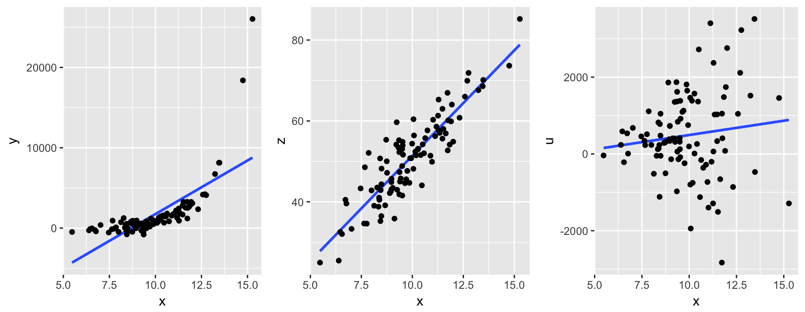
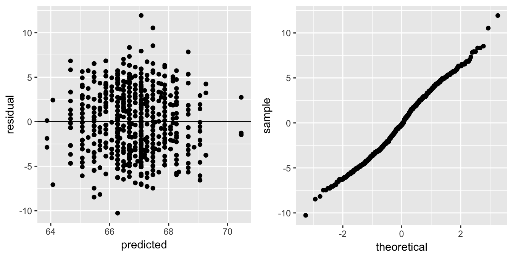
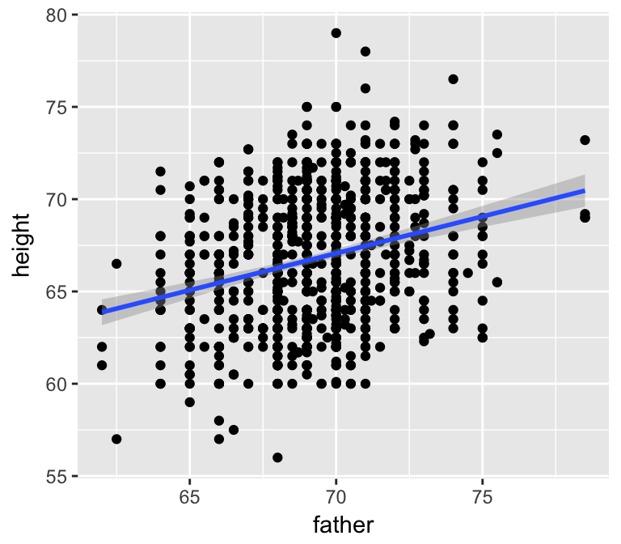
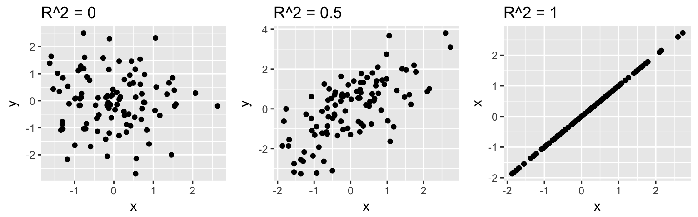
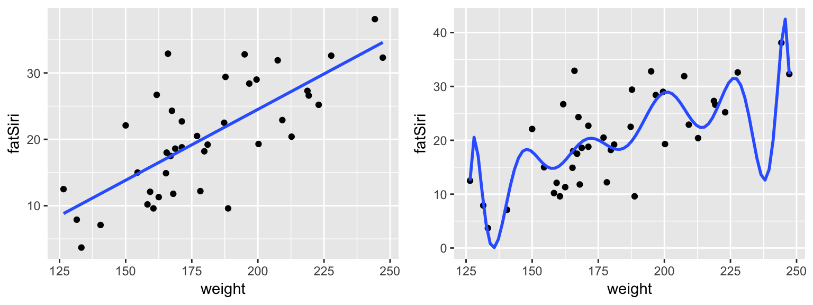
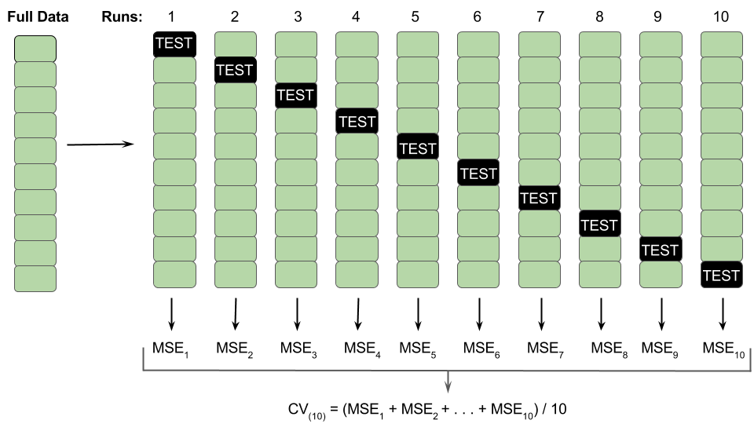

4.3 Day 2b: Model Assumptions & Measuring Model Quality
MOTIVATION
One of the most famous quotes in statistics is the following from George Box (1919–2013):
“All models are wrong, but some are useful.”
Thus far, we’ve constructed models from sample data & used these to tell stories about the relationships among variables of interest. We haven’t yet discussed the quality of these models. Today, we’ll focus on the following questions:
Does our model meet the model assumptions?
How well does our model explain the variability in the response?
How accurate are the predictions calculated from this model?
4.3.1 Regression Assumptions & Residual Analysis
Let \(y\) be a response variable with a set of \(k\) predictors \((x_{1}, x_{2}, ..., x_{k})\). Then the population linear regression model is
\[y = \beta_0 + \beta_1 x_{1} + \beta_2 x_{2} + \cdots + \beta_k x_{k} + \varepsilon\]
where
\(\beta_0 + \beta_1 x_{1} + \beta_2 x_{2} + \cdots + \beta_k x_{k}\) captures the trend of the relationship
\(\epsilon\) reflects individual deviation from the trend (residual)
In “ordinary” least squares regression, there are 2 key assumptions:
- Assumption 1:
The observations of (\(y,x_1,x_2,...,x_k\)) for any case are independent of the observations for any other case.
- Assumption 2:
At any set of predictor values \((x_{1}^*, x_{2}^*, \ldots, x_{k}^*)\),
\[\varepsilon \sim N(0,\sigma^2)\] That is:the expected value of the residuals is \(E(\varepsilon) =0\)
In words: Across the entire model, responses are balanced above & below the trend. Thus the model accurately describes the “shape” and “location” of the trend.homoskedasticity: the variance of the residuals \(Var(\varepsilon) = \sigma^2\)
In words: Across the entire model, variability from the trend is roughly constant.the \(\varepsilon\) are normally distributed
In words: individual responses are normally distributed around the trend (closer to the trend and then tapering off)
- Let’s build some intuition for these assumptions.
Come up with some examples that violate Assumption 1.
For the plots below, indicate which parts of Assumption 2 hold.
For each part a, b, and c of Assumption 2, discuss the consequences/severity of violating the assumption.
Checking the model assumptions
Recall Galton’s examination of the relationship between a person’s height and the height of their father:
data(Galton) ggplot(Galton, aes(y = height, x = father)) + geom_point() + geom_smooth(method="lm")
galton_mod <- lm(height ~ father, data = Galton) summary(galton_mod) ## ## Call: ## lm(formula = height ~ father, data = Galton) ## ## Residuals: ## Min 1Q Median 3Q Max ## -10.268 -2.669 -0.209 2.634 11.933 ## ## Coefficients: ## Estimate Std. Error t value Pr(>|t|) ## (Intercept) 39.1104 3.2271 12.12 <2e-16 *** ## father 0.3994 0.0466 8.57 <2e-16 *** ## --- ## Signif. codes: 0 '***' 0.001 '**' 0.01 '*' 0.05 '.' 0.1 ' ' 1 ## ## Residual standard error: 3.45 on 896 degrees of freedom ## Multiple R-squared: 0.0758, Adjusted R-squared: 0.0748 ## F-statistic: 73.5 on 1 and 896 DF, p-value: <2e-16Do the assumptions appear to hold for this model?
We quickly lose the ability to visualize a model as the number of predictors increases. Instead of checking the assumptions by eye, we can construct residual plots. First, put the data together:
# Combine the observed responses, predictions, & residuals mod_results <- data.frame(observed = Galton$height, predicted = galton_mod$fitted.values, residual = galton_mod$residuals) head(mod_results, 3) ## observed predicted residual ## 1 73.2 70.46 2.738 ## 2 69.2 70.46 -1.262 ## 3 69.0 70.46 -1.462We can then check out two plots:
# Plot residuals vs predictions ggplot(mod_results, aes(y = residual, x = predicted)) + geom_point() + geom_hline(yintercept = 0) #a Q-Q plot of the residuals ggplot(mod_results, aes(sample = residual)) + geom_qq()
Residual Analysis Summary
| Assumption | Consequence | Diagnostic | Solution |
|---|---|---|---|
| independence | inaccurate inference | common sense / context | use a different modeling technique |
| \(E(\varepsilon)=0\) | lack of model fit | plot of residuals vs predictions | transform \(x\) and/or \(y\) |
| \(Var(\varepsilon)=\sigma^2\) | inaccurate inference | plot of residuals vs predictions | transform \(y\) |
| normality of \(\varepsilon\) | if extreme, inaccurate inference | Q-Q plot | if extreme, transform \(y\) |
4.3.2 Measuring model quality: \(R^2\) & MSPE
Meeting the model assumptions isn’t the only important piece of the model evaluation process. We also need a sense of the accuracy in using this model to understand and make predictions about \(y\). For this exercise, we’ll use data from the fivethirtyeight article The Ultimate Halloween Candy Power Ranking. These data were produced from this experiment which presented subjects with a series of head-to-head candy matchups and asked them to indicate which candy they preferred. You can load these data from the fivethirtyeight package:
data("candy_rankings")
?candy_rankings
# Store under a shorter name
candy <- candy_rankingsLet’s explore the structure of these data!
# Check out the head
head(candy)
# Arrange from least to most popular
candy %>%
arrange(winpercent)
# Arrange from most to least popular
candy %>%
arrange(desc(winpercent))
Models
Our ultimate goal is to understand the variability inwinpercentfrom candy to candy:ggplot(candy, aes(x = winpercent)) + geom_histogram(color = "white", binwidth = 5) Visualize the following relationships. Which appears to be best?
# Plot: winpercent vs chocolate # model_1: winpercent vs chocolate # Plot: winpercent vs sugarpercent # model_2: winpercent vs sugarpercent # Plot: winpercent vs chocolate & sugarpercent # model_3: winpercent vs chocolate & sugarpercent (NO interaction)Check out the residuals. Which model did the best job of predicting the
winpercentfor 100 Grand, the first candy in the dataset?
Mean Squared Prediction Error (MSPE)
To measure the overall quality of the models, we need to combine the residuals for all of the cases / candy. It might be tempting to calculate the mean residual but this is always 0 within rounding:mean(model_1$residual) ## [1] 7.755e-16We’ll consider 2 different methods, the first being the mean square prediction error:
\[MSPE = \frac{1}{n}\sum_{i=1}^n (y_i - \hat{y}_i)^2 = \frac{(y_1 - \hat{y}_1)^2 + (y_2 - \hat{y}_2)^2 + \cdots (y_n - \hat{y}_n)^2}{n}\]# Calculate the MSPE for model_1 # Calculate the MSPE for model_2 # Calculate the MSPE for model_3
R2
\(R^2\) is a more interpretable measure of model quality. \(R^2\) is restricted to be between 0 and 1 - it is the proportion of the variability in \(y\) that’s explained by the model. Thus an \(R^2\) of 0 indicates that the model doesn’t explain any of the variability in \(y\); an \(R^2\) of 1 indicates that the model perfectly explains the variability in \(y\):
In fact, \(R^2\) is related to MSPE! Letting \(\overline{y} = \frac{1}{n} \sum_{i=1}^n y_i\) denote the sample mean of \(y\), the total sum of squares measures the total squared deviations of \(y_i\) from \(\overline{y}\):
\[TSS = \sum_{i=1}^n (y_i - \overline{y})^2 = (y_1 - \overline{y})^2 + (y_2 - \overline{y})^2 + \cdots (y_n - \overline{y})^2\] Then \(R^2\) can be calculated by the MSPE and TSS: \[R^2 = 1 - \frac{MSPE}{TSS/n} = 1 - \frac{\sum_{i=1}^n (y_i - \hat{y}_i)^2}{\sum_{i=1}^n (y_i - \overline{y})^2}\]We don’t have to calculate this by hand. It’s reported in the model
summary()table:summary(model_1) summary(model_2) summary(model_3)
NOTE: \(R^2\) can also be calculated by a ratio of variances: \[R^2 = \frac{\text{Var}(\hat{y}_i)}{\text{Var}(y_i)} = 1 - \frac{\text{Var}( y_i - \hat{y}_i)}{\text{Var}(y_i)}\]
- In conclusion (so far)
- Which of the models is “best” with respect to MSPE? With respect to \(R^2\)?
- In general, what happens to MSPE & \(R^2\) as we add more terms to the model?
- Which of the models is “best” with respect to MSPE? With respect to \(R^2\)?
In general, as we add more terms to the model, MSPE decreases and \(R^2\) increases. As we will discuss, this does not necessarily mean we should keep adding more and more predictor variables to our models.
4.3.3 An experiment
Split up into 6 groups.
Each group will be given their own set of data that includes measurements on 40 adult males, including a measure of body fat percentage,
fatSiri:group_data <- read.csv("https://www.macalester.edu/~ajohns24/data/bodyfat?????.csv") # Remove 2 variables so you're not tempted to use them group_data <- group_data %>% select(-c(fatBrozek, fatFreeWeight))Working within your group, use these data to develop the best predictive model of
fatSiri. (For example, what model would you give to a doctor that wished to predict body fat percentage from physical measurements?) The rules: Even if you know some clever tools and techniques that would help with this task, stick to intuition & tools you’ve learned in the bootcamp thus far.- Record the following in this Google sheet:
- A name for your group.
- Your estimated sample model, specifying both your chosen set of predictors \(x_i\) & sample coefficients \(\hat{\beta}_i\): \[\text{fatSiri} = \hat{\beta}_0 + \hat{\beta}_1 x_1 + \hat{\beta}_2 x_2 + \cdots + \hat{\beta}_k x_k\]
- Your model’s MSPE.
- A name for your group.
4.3.4 Measuring model quality: cross validation
Our post-experiment discussions highlight a couple of important themes:
Training and testing our model using the same data results in overly optimistic assessments of model quality. For example, in-sample or training errors (ie. MSPE calculated using the same data that we used to train the model) tend to be smaller than testing errors (ie. MSPE calculated using data not used to train the model).
Adding terms to a model might improve measures of model quality calculated using the same data that were used to build the model, but can result in overfitting.
We’ll consider a different measure of model quality that addresses some of these concerns: cross validation. Throughout this discussion, we’ll all use the same data and compare the following 2 models:
body_data <- read.csv("https://www.macalester.edu/~ajohns24/data/bodyfat50.csv")
# Fit models
model_1 <- lm(fatSiri ~ weight, body_data)
model_12 <- lm(fatSiri ~ poly(weight,12), body_data) # Plot the models
ggplot(body_data, aes(y = fatSiri, x = weight)) +
geom_point() +
stat_smooth(method="lm", se=FALSE)
ggplot(body_data, aes(y = fatSiri, x = weight)) +
geom_point() +
stat_smooth(method="lm", formula=y~poly(x, 12), se=FALSE)
You can but don’t have to confirm the in-sample \(R^2\) and MSPE for these 2 models:
| Model | In-sample \(R^2\) | In-sample MSPE |
|---|---|---|
model_1 |
0.5424 | 32.48 |
model_12 |
0.6403 | 25.53 |
- Think
- Which model,
model_1ormodel_12, has the “best” \(R^2\) and MSPE measurements?
- Suppose we observe 50 more adults. Which model do you think would do a better job at predicting these adults’
fatSirifrom theirweight? Why?
- Which model,
Validation
In practice, we only have one sample of data. We need to use this one sample to both train and test our model. Consider a simple strategy where we randomly select half of the sample to train the model and test the model on the other half. To ensure that we all get the same samples and can reproduce our results, we’ll set the random number generating seed to the same number (2000). We’ll discuss this in detail as a class!# There are 40 people dim(body_data) ## [1] 40 19 # Set the random number seed set.seed(2000) # Randomly sample half (20) of these for training data_train <- sample_n(body_data, size = 20) dim(data_train) ## [1] 20 19 # Take the the other 20 for testing data_test <- dplyr::setdiff(body_data, data_train) dim(data_test) ## [1] 20 19Using the training data: Fit the model of
fatSiribyweight(the simple one) and calculate the training MSPE.# Fit the model train_mod <- lm(fatSiri ~ weight, data = ___) # Calculate training MSPEHow well does this model generalize to the test set? Use the training model to predict
fatSirifor the test cases:# Make predictions test_predictions <- predict(train_mod, newdata = data.frame(weight = ___)) # Calculate residuals test_residuals <- ___ # Calculate testing MSPE mean(test_residuals^2)Compare the MSPE of the training and test sets. Did the training model over- or under-estimate its prediction error? That is, are the results better or worse than what was promised by the training model? Extra evidence: Compare the regression model for the training set (blue) to that for the test set (red): 
We could use the MSPE for the test set to measure how well our model generalizes to the population. But what might be the flaws in this approach? Can you think of a better idea? We’ll discuss this as a class before moving on…
- 2-fold cross validation
The validation approach we used above useddata_trainto build the model and then tested this model ondata_test. Let’s reverse the roles!- Fit the model using
data_testand test it ondata_train. (Calculate the testing MSPE.)
- Part a gave you a new measure of model quality. Instead of picking either this measure or the one you calculated in the previous exercise (when the roles were reversed), average them! This average is an estimate of the 2-fold cross validation error. The general k-fold cross validation algorithm is described below.
- Fit the model using
\(k\)-Fold Cross Validation (CV)
- Divide the data into \(k\) groups / folds of equal size.
Repeat the following procedures for each fold \(j \in \{1,2,...,k\}\):
- Divide the data into a test set (fold \(j\)) & training set (the other \(k-1\) folds).
- Fit a model using the training set.
- Use this model to predict the responses for the \(n_j\) cases in fold \(j\): \(\hat{y}_1, ..., \hat{y}_{n_j}\)
- Calculate the MSPE for fold \(j\): \[\text{MSPE}_j = \frac{1}{n_j}\sum_{i=1}^{n_j} (y_i - \hat{y}_i)^2\]
- Calculate the “cross validation error”, ie. the average MSPE from the \(k\) folds: \[\text{CV}_{(k)} = \frac{1}{k} \sum_{j=1}^k \text{MSPE}_j\]
In pictures: 10-fold CV

- 40-fold cross validation, aka “Leave-one-out CV (LOOCV)”
Using the tools you learned in your earlier programming module, you could write a for-loop to perform cross validation. However, somebody already did that work! The
cv.glm()function in thebootpackage calculates cross validation error for us. First, use it to calculate the 40-fold cross validation error.# First refit the model using ALL data & glm() model_1_glm <- glm(fatSiri ~ weight, body_data, family = "gaussian") # Then calculate the error model_1_cv40 <- cv.glm(body_data, model_1_glm, K = 40) # The error is the first reported value model_1_cv40$delta ## [1] 35.35 35.31Explain why, for this data, a 40-fold cross validation procedure would also be called “leave-one-out”. Hint: There are 40 cases in our dataset.
- In practice, \(k=10\) and \(k=7\) are common choices for cross validation. This has been shown to hit the ‘sweet spot’ between the extremes of \(k = n\) (LOOCV) and \(k=2\). Why? What advantages do you think 10-fold CV has over 2-fold CV? What advantages do you think 10-fold CV has over LOOCV?
- Using CV to compare models
- Calculate 10-fold cross validation errors for both of our original models:
model_1:fatSiri ~ weight
model_12:fatSiri ~ poly(weight,12)
NOTE: since the 10 folds are randomly chosen, set the random number seed so that you get the same folds each time.
model_1_glm <- glm(fatSiri ~ weight, body_data, family = "gaussian") model_12_glm <- glm(fatSiri ~ poly(weight,12), body_data, family = "gaussian") # Set the seed set.seed(2018) # 10-fold CV error for model_1_glm model_1_cv10 <- ___ model_1_cv10$delta # 10-fold CV error for model_12_glm model_12_cv10 <- ___ model_12_cv10$delta - Recall that
model_1had an in-sample MSPE of 32.48 andmodel_12had an in-sample MSPE of 25.53.- Within both models, how do the in-sample errors compare to the CV errors?
- Which model has the best in-sample errors?
- Which model has the best CV error?
- Which model would you choose?
- Within both models, how do the in-sample errors compare to the CV errors?
- Calculate 10-fold cross validation errors for both of our original models:
Parsimonious Models
Reflecting back, these exercises illustrate the importance of parsimony in a statistical analysis. A parsimonious analysis is one that balances simplicity with the desire for the highest \(R^2\) (for example). In the case of model building, increasing the number of predictors increases \(R^2\). BUT:
The greater the number of predictors, the more complicated the model is to implement and interpret;
The greater the number of predictors, the greater the risk of overfitting the model to our particular sample of data. That is, the greater the risk of our model losing the general trend, hence, the model’s generalizability to the greater population.